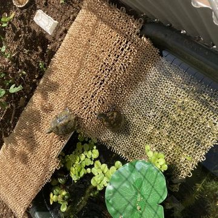
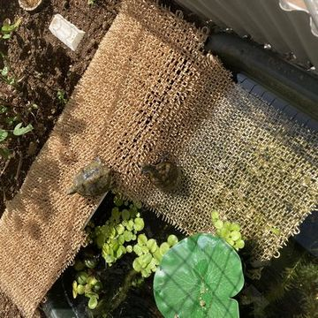

人工池
雨天増水時に水が溢れないように上部に排水口があるタライを探し、 ホームセンター（コメリ）で「トンボ 角型タライジャンボ 水抜栓付 120L（86x66x34）（新輝合成）」 （参考: KOMERI.COM商品ページ ）を購入。
排水口からメダカやヌマエビが流れ出ないように網（100均の鉢底ネット）を貼り付ける。使用した接着剤はセメダインの「スーパーXハイパーワイド」。

地面に穴を掘り、タライを水平に埋めて池とする。水を試しに張って傾きを確認してから、水平になるよう穴底の掘り具合を微調整した。
池底に「硬質赤玉土中粒」と「小粒玉砂利」を敷いて、（雨水タンクの）水を入れる。 直後は赤玉土で水が濁るが、翌日には澄んだ水の池になった。
イシガメが池に出入りするためのスロープを設置
- 材料
-
- ワイヤーネット26×51cm、7x14マス（100均）
- ワイヤーネット19×62cm、5x17マス（100均）
- 人工芝「やわらかターフ」（ホームセンター）、100均の人工芝より柔らかく歩きやすそう
適当なサイズに切った人工芝とワイヤーネット2種を結束バンドで固定し、イシガメが昇り降りし易い形に曲げて設置する。
 

晴れた日には人工芝の上に並んで気持ち良さそうに日向ぼっこ（甲羅干し）している。
シェルターを設置
イシガメが成長してヌマエビとタニシを捕食しようするようになったので、ヌマエビとタニシを守るシェルターとして塩ビパイプの切れ端や百均のワイヤーカゴを池の底に設置した。

パーティションを設置
気分によって他のイシガメを執拗に追い回すことがあるので、池の真ん中にパーティションを設置した。